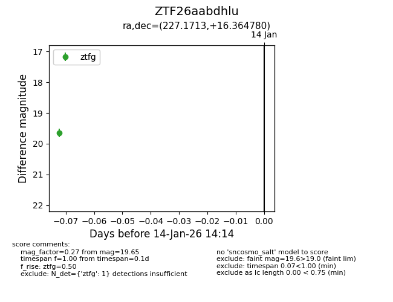
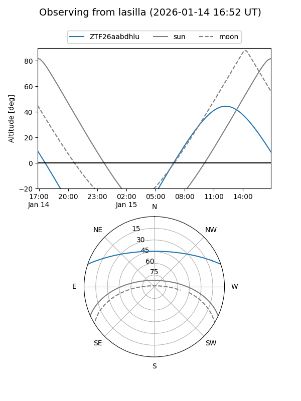
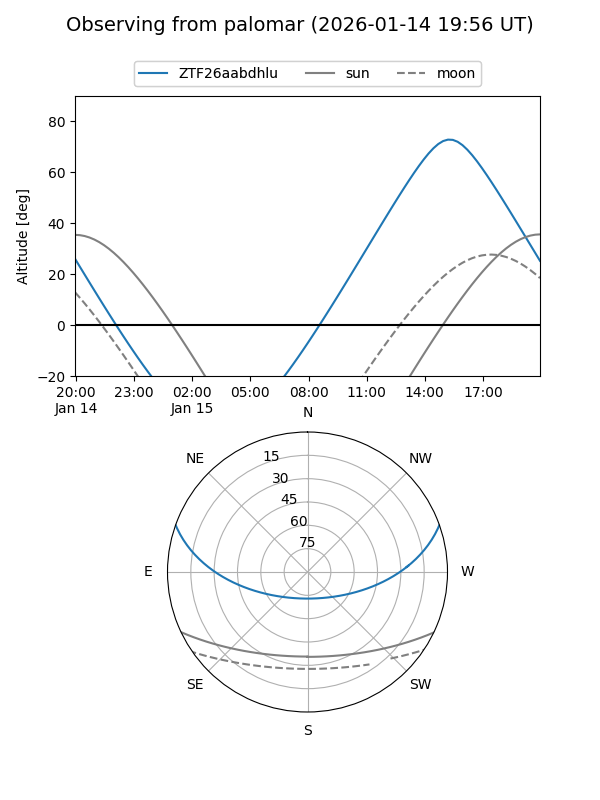

ZTF26aabdhlu
Target ZTF26aabdhlu at 2026-01-14 14:30
Aliases and brokers:
FINK: link
Lasair: link
ALeRCE: link
alt names
ZTF26aabdhlu (ztf,fink_ztf)
Coordinates:
equatorial (ra, dec) = 227.1713,+16.36478
equatorial (HMS+DMS) = 15:08:41.12,+16:21:53.21
galactic (l, b) = (21.3729,+56.49177)
Flags:
Photometry:
last ztfg=19.65, ztfr=19.66
1 ztfg, 1 ztfr detections
Lightcurve

Visibility


Additional plots